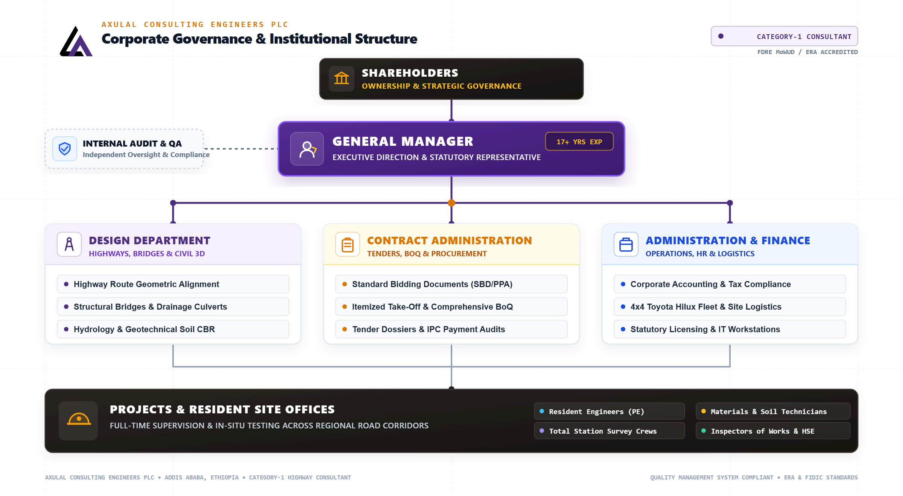
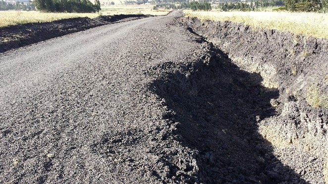
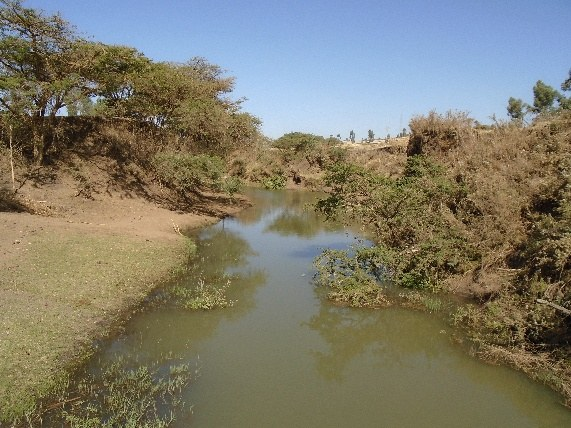
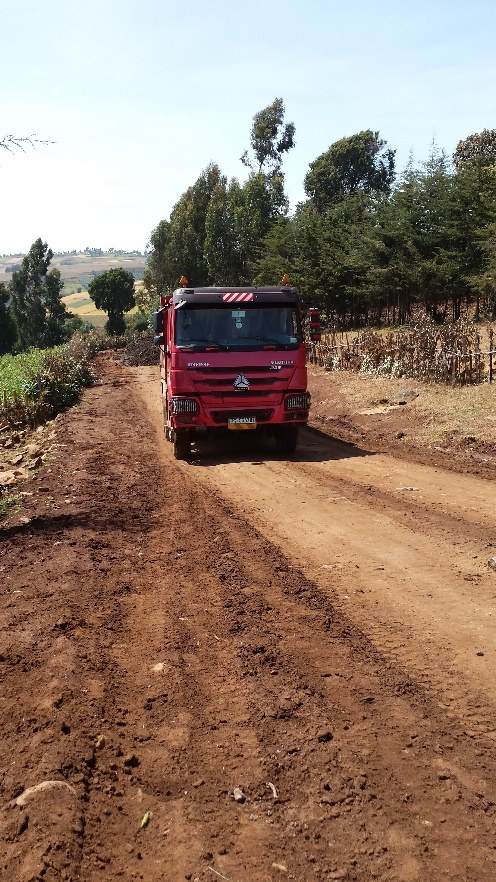
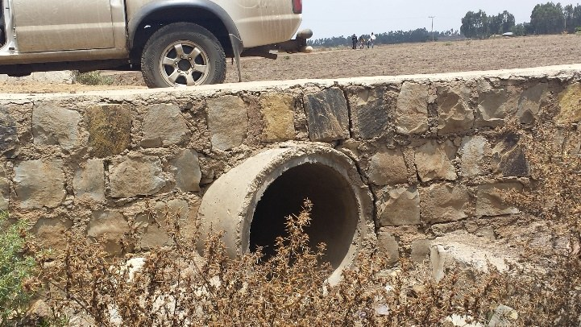
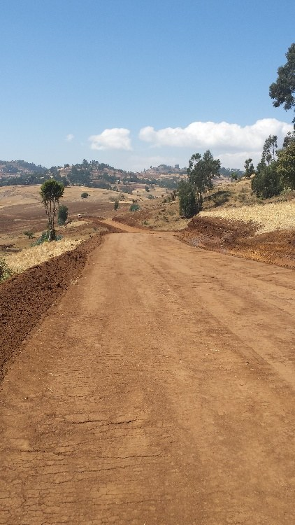
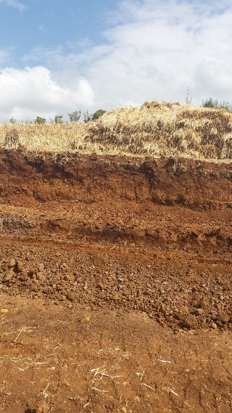
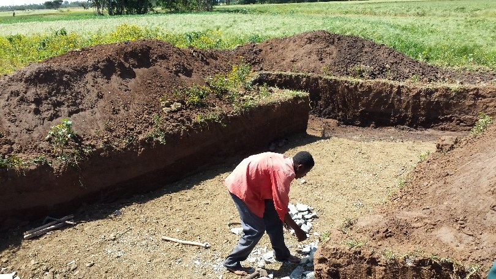
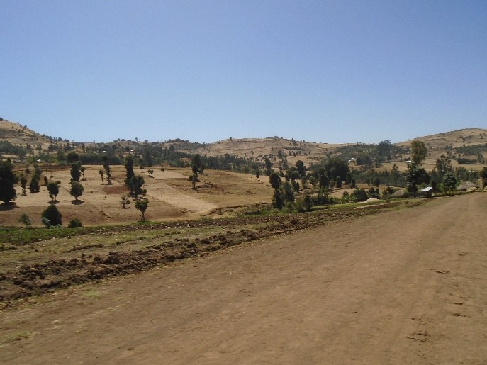

Ginchi-Danisa Gravel Road Project
15.5 km of classified rural highway traversing mountainous terrain, featuring mortared stone masonry retaining walls and hydraulic box culverts engineered for heavy agricultural transport.
Since 2011, Axulal Consulting Engineers PLC (አክሱላል) has delivered premier feasibility studies, precision geometric road design, reinforced concrete bridge engineering, tender preparation, and resident construction supervision across Ethiopia.
Headquartered in Addis Ababa, Axulal Consulting Engineers PLC brings together senior Ethiopian highway designers, structural bridge specialists, hydrologists, and geotechnical materials experts.
Established in 2011 under the Commercial Code of Ethiopia, Axulal Consulting Engineers PLC is fully registered as a Category-1 Highway and Bridge Consulting Firm with the Ministry of Urban Development and Construction and certified by regional authorities including the Oromiya Road Authority (ORA).
Our multidisciplinary team has successfully planned, designed, and supervised over 145 kilometers of critical all-weather rural road corridors, multi-span reinforced concrete river bridges, and hydraulic catchment networks, transforming economic connectivity for hundreds of thousands of citizens.
Strict conformity with ERA Standards, AASHTO guidelines, and rigorous compressive cube and nuclear compaction testing.
Proven track record resolving complex mountain benching, black cotton soil stabilization, and heavy flood hydrology.
Impartial FIDIC and MoWUD contract administration, dispute-free project handovers, and transparent BoQ auditing.
Trusted partner to regional road authorities, municipal councils, and international development initiatives.

From initial reconnaissance and topographic GPS surveying to final defect-liability certification, we provide complete lifecycle engineering.
Geometric alignment design for DC-1 to DC-6 standards using modern digital terrain modeling (Civil 3D). Optimization of cut-and-fill mass haul diagrams, horizontal and vertical curvature, sight distances, and cross-fall cambers tailored to Ethiopian highlands.
Comprehensive structural analysis and detailing for reinforced concrete girder bridges, pier columns, abutments, and wingwalls. Designed to AASHTO HS20-44 live loads with deep scour countermeasures and elastomeric expansion bearings.
Catchment rainfall run-off modeling, peak discharge calculations, and hydraulic sizing of cross-drainage structures: reinforced single/twin concrete box culverts, hand-dressed mortared stone headwalls, and stone gabion mattress riverbank protections.
Dynamic Cone Penetrometer (DCP) investigations, California Bearing Ratio (CBR) soil testing, Atterberg limit determinations, and borrow pit quarry suitability studies. Specialized solutions for expansive black cotton soils and gravel capping.
Authoring comprehensive Standard Bidding Documents (SBD) compliant with PPA and FIDIC guidelines. Detailed technical specifications, accurate take-off itemized Bill of Quantities (BoQ), cost estimation, and contractor bid evaluations.
Full-time resident engineer inspection teams enforcing day-to-day contract compliance. On-site concrete cube compressive crushing tests, nuclear gauge compaction verification, interim payment certificate (IPC) audits, and dispute management.
Explore our completed highway corridors and bridge crossings delivered for the Oromiya Road Authority (ORA) spanning over 145 km of critical regional transport infrastructure.
15.5 km of classified rural highway traversing mountainous terrain, featuring mortared stone masonry retaining walls and hydraulic box culverts engineered for heavy agricultural transport.

Dual-lot classified road connecting agrarian market centers, with heavy cut-and-fill benching and longitudinal drainage channels mitigating highland erosion.

Critical transport connector with comprehensive soil stabilization across expansive clay deposits, camber shaping, and selected gravel capping.

Highland gravel alignment designed with erosion-control runoff berms and hand-dressed masonry cross-drainage structures.

Heavy agricultural corridor engineered for heavy axle loads, deep sub-base compaction, and durable gravel surface course.
24-meter single-span reinforced concrete girder bridge over the Awash River with deep abutment footings and hydraulic scouring countermeasures.

Our longest single alignment: 27.0 km of all-weather road with multi-catchment drainage culverts, rock cuts, and community access ramps.

Rural link road engineered with subgrade stabilization across expansive clay soils, stone-lined ditches, and compaction QC.

14 km roadway connecting regional farming centers, featuring multiple concrete box culverts and roadside retaining aprons.
Feeder corridor designed to DC-2 standards with optimized cut-and-fill earthworks and community water crossing facilities.
22-meter reinforced concrete girder bridge over Berga River; site quality supervision, rebar cage testing, and concrete cube compressive validation.

Challenging rocky terrain alignment requiring mechanical rock excavation, stone gabion protection, and final camber grading.
No projects match that filter. Try a shorter search term or select “All Projects”.
Direct high-resolution photographic evidence of resident engineering supervision: subgrade compaction, falsework, retaining structures, and asphalt/gravel handovers.
Heavy 15-ton vibratory road roller achieving 98% Modified AASHTO compaction density on selected granular sub-base along Ginchi-Danisa.
Reinforced concrete pier column, abutment formwork, and heavy falsework bracing for Awash River Girder Bridge.
Hand-dressed mortared stone masonry headwalls and barrel construction providing high-capacity flood runoff cross-drainage.
Heavy crawler excavator cutting 1:1 roadway benches through steep volcanic rock slopes on Asgori-Kotoba.
Completed all-weather DC-2 gravel carriageway with 4% cross-fall camber smoothly winding through rural Oromia.
Deep spread footing excavation, dewatering sump pumps, and lean concrete blinding layer for stream crossing substructure.
Cast-in-situ reinforced concrete retaining wall stabilizing vulnerable embankment toe against heavy seasonal river surges.
Pre-pour formwork, rebar spacing validation, and cover block inspection on a 2x2m reinforced concrete box culvert.
Reinforced concrete deck girder rebar cage placement and transverse diaphragm inspection at Berga River Bridge.
Mechanical ripping, heavy rock benching, and motor grader rough-grading on steep Werkakore-Bujiroo corridor.
Triple-twist galvanized wire-mesh stone gabion mattresses and Reno mattresses installed to prevent riverbank scour.
Precision motor grader fine-trimming crown camber and surface smoothness ahead of official joint handover to ORA.
We adhere strictly to national statutory codes, international design criteria, and environmental safeguard policies.
Certified Highway and Bridge Consultant registered with the Federal Ministry of Urban Development & Construction.
Full compliance with Ethiopian Roads Administration geometric, drainage, pavement, and bridge design standards.
Mastery of FIDIC Red Book and standard Ethiopian procurement conditions for transparent contract governance.
Rigorous environmental and social impact assessments ensuring watershed protection and community sustainability.
Contact our Addis Ababa central office to submit an RFP, discuss a road or bridge tender, or schedule a technical consultation.
Addis International Bank Bldg (Balderas Branch)
Yeka Sub-City, Addis Ababa, Ethiopia
Coordinates: 9.0231° N, 38.7811° E (Balderas Area)
Monday - Friday: 8:30 AM - 5:30 PM (EAT)
Saturday: 8:30 AM - 12:30 PM
Tell us the corridor, terrain and required milestones. The tender desk replies within one working day. Fields marked * are required.